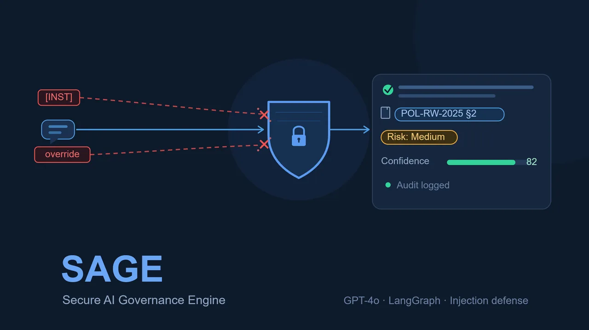

AI Safety & Governance · Production LLM System
SAGE
A secure AI governance engine: an enterprise compliance assistant that reads a company’s policy documents, answers employee questions in plain English with citations and a risk level, flags conflicting policies, and blocks prompt-injection attacks before they reach the model. Built across five phases, from a single prompt to a hardened, deployed product.

Overview
An enterprise compliance assistant you can actually trust.
SAGE is an enterprise AI compliance assistant that reads a company’s own policy documents and answers employee questions with grounded, cited answers, a risk level, and a confidence score. It detects conflicts between policies, refuses to be talked out of the rules, and blocks prompt-injection attacks before they reach the model. I led it as product manager on a 3-person team, scoping the product, owning the metrics, and driving it from a single prompt to a hardened, deployed system on Hugging Face Spaces.
The technical core is a LangGraph ReAct agent on GPT-4o reasoning over a ChromaDB hybrid-RAG index, fronted by an 8-layer prompt-security pipeline. It was built across five measured phases, reaching ≥91% risk-classification accuracy and a 100% prompt-attack block rate.
The problem
Policy is dense, and getting it wrong is expensive.
Employees misread long policy documents, rely on informal verbal guidance, and create real regulatory exposure. The existing options are both bad: route every question to the legal team (slow and expensive), or use a generic chatbot that confidently hallucinates policy details (dangerous).
SAGE sits in between: grounded in the actual policy text, automated, auditable, and secure. It answers a question like “I saved customer data to my personal laptop, is that a violation?” with a citation-backed answer a non-lawyer can act on.
Problem evidence
The failure mode is a confident wrong answer.
Across the build, the evidence kept pointing at the same thing: the dangerous case is not a missing answer, it is an authoritative-sounding wrong one. I treated that as the central design constraint, and the evaluation work bore it out.
Generic models guess
A zero-shot generic model answered the evaluation set at only 52% accuracy. Half the time it produced a plausible but ungrounded policy reading, which reads as authoritative and is worse than abstaining.
Scenarios trigger many policies
A single real situation often touches several policies at once. Conflicts between them go unnoticed until an incident, so an answer drawn from one section in isolation is quietly unsafe.
Adversarial input is real
A large slice of the evaluation corpus was deliberately adversarial, false-fact injections and jailbreaks, because anyone who can talk a compliance bot out of its rules can manufacture a defensible-looking excuse.
What the evidence demanded
If the core risk is a confident hallucination, then grounding, mandatory citations, conflict surfacing, and refusal are not features, they are the product. Every later design decision was measured against whether it closed the gap between a 52% guessing baseline and a sourced, auditable ruling.
Target users, personas & jobs to be done
Three users, one trusted answer.
SAGE serves three people around a single policy question. I wrote each persona to its job to be done, so the product is judged by whether it does that job, not by how clever the agent is.
The Compliance Reviewer
Fields the same policy questions over and over and is the escalation point when an answer is unclear. Needs an auditable, citation-backed trail for every ruling.JTBD: “When an employee asks a policy question, help me resolve it correctly and defensibly without re-reading the whole manual.”
The Policy Owner
Owns and maintains the policy documents, and cares that they are interpreted as written and that conflicts between policies surface early.JTBD: “When my policies are queried, make sure answers are grounded in the real text and tell me where two policies collide.”
The Employee
Has a real situation and a yes-or-no question, and wants a safe answer in plain English without flagging themselves to legal for routine queries.JTBD: “When I’m unsure if something is allowed, give me the actual rule, the risk level, and where it came from, so I can act.”
Current user journey
How a policy question gets answered today.
Before SAGE, an employee with a compliance question has two paths, and both are bad. I mapped the journey to find where trust and time leak out.
Hits a question
Real scenarioAn employee runs into a real situation: remote-work eligibility, handling customer data, an expense edge case.
Searches the manual
Dense textThey skim a long policy PDF, miss the relevant section, or misread how two rules interact.
Asks around
InformalThey rely on a colleague’s verbal interpretation, which spreads guidance nobody can audit later.
Escalates or guesses
Slow or riskyThey route the question to a slow, expensive legal team, or they guess and create regulatory exposure.
The gap
There is no fast, safe, sourced middle option. Legal is accurate but slow and expensive; self-service is fast but ungrounded. SAGE is designed to occupy exactly that empty middle: a sourced answer in seconds that a non-lawyer can act on.
Competitive & market analysis
The alternatives all fail the trust test.
The status quo for “is this allowed?” is a generic LLM chat, a manual legal review, or a keyword search of the policy file. Each is strong on one axis and broken on another. SAGE’s position is the one that holds all three at once: grounded, fast, and auditable.
| Approach | Speed | Grounded in real policy | Cited & auditable | Resists manipulation | Where it breaks |
|---|---|---|---|---|---|
| Generic LLM chat | Fast | No | No | No | Confidently hallucinates policy detail; no citations; talked out of rules easily |
| Manual compliance / legal review | Slow | Yes | Yes | Yes | Expensive and does not scale; every routine question consumes expert time |
| Keyword search of the policy file | Fast | Partial | Partial | n/a | Returns documents, not answers; misses conflicts and risk; user still interprets |
| SAGE | Fast | Yes | Yes | Yes | Depends on the quality of the uploaded corpus |
The market gap is not “an LLM that answers compliance questions.” Generic chat already does that, badly. The gap is an assistant whose answers are grounded in the company’s real text, cited, auditable, and hard to manipulate, which is the one combination none of the alternatives delivers.
Product vision
Every employee, a sourced answer.
Vision
Any employee, at any company, can ask a plain-English compliance question and get back a correct, cited, risk-rated answer they can act on in seconds, while every ruling leaves a defensible audit trail and no attacker can talk the system out of its own rules.
The vision is portability and trust together. SAGE should never depend on a single hard-coded corpus: drop in any company’s policies and a dynamic system prompt specializes the reasoning per organization type, so the same agent serves any policy set without code changes. Trust is the non-negotiable: the day SAGE confidently invents a policy is the day it is worse than no tool at all.
Product strategy & positioning
Win on trust, not on cleverness.
The strategic bet is that in compliance, trust beats fluency. A more eloquent answer that might be wrong is a liability; a plainer answer that is grounded, cited, and refusable is the product. So I positioned SAGE deliberately against the alternatives rather than against other chatbots.
Positioning
For compliance reviewers, policy owners, and employees who need a fast, safe answer, SAGE is the grounded compliance assistant that answers only from the company’s real policy text, cites every claim, and refuses to be manipulated, unlike a generic chatbot that guesses or a legal review that does not scale.
Wedge
Start where the pain is sharpest and the answer is checkable: routine, repeat policy questions that today bounce to legal. Grounding plus citations makes correctness verifiable, which is what earns the trust to expand scope.
Moat
The defensible asset is the evaluation and security harness: a labelled golden set, deterministic graders, and a versioned 52-pattern defense. Anyone can wire an LLM to a PDF; the hard part is proving it is right and hard to fool.
Value proposition
What each user gets.
| User | Pain today | What SAGE delivers |
|---|---|---|
| Employee | Misreads dense policy, or waits on legal for a routine question | A plain-English answer with the actual rule, the cited section, a risk level, and a confidence score, in seconds |
| Compliance reviewer | Re-answers the same questions and cannot easily defend a past ruling | Routine questions deflected, and a logged, citation-backed trail for every answer |
| Policy owner | Documents are misread and policy conflicts surface only after an incident | Answers grounded in the real text and conflicts flagged before they cause harm |
The one-line promise
A correct, cited, risk-rated answer a non-lawyer can act on, that abstains rather than guess and refuses to be talked out of the rules.
Goal & success metrics
A trusted answer, not just an answer.
North Star metric · TRR
Trusted Resolution Rate (TRR), the share of compliance questions SAGE resolves with a correct, citation-grounded answer the employee can act on without escalating to legal. It only counts if the answer is right, sourced to real policy text, and safe.
For a system whose whole value is trust, one number isn’t enough, so TRR sits on a layered metric tree.
North Star & primary
- Risk-classification accuracy did it call the risk correctly
- Citation groundedness every cited section is real
- LLM-as-judge quality accuracy, clarity, completeness
- Self-serve resolution answered without legal escalation
Counter · guardrail
- Hallucinated citations a fabricated section destroys trust
- Attack bypass rate any injection that slips through
- False-positive blocks refusing a legitimate question
- Vague fallback rate “consult your policy” non-answers
Qualitative · signals
- Confidence employees trust the answer enough to act
- Auditability every answer leaves a defensible trail
- Transparency reasoning and tensions are shown, not hidden
- Portability works on any company’s uploaded policies
The solution
Ask in plain English, get a grounded ruling.
The same product in two voices: what the employee experiences, and how it actually works.
In plain language
A compliance expert that has read every policy.
An employee asks a normal question: “I just started 45 days ago, am I eligible for remote work?” SAGE reads the company’s own uploaded policies and answers with the actual rule, the section it came from, a risk level, and a confidence score, plus any policy tension it spotted.
It remembers the conversation so follow-ups work, it refuses to be talked out of the rules, and it never invents a policy. Drop in any company’s PDF or text policies and it adapts.
Under the hood
A hardened RAG agent with structured output.
A LangGraph ReAct agent on GPT-4o reasons over a ChromaDB hybrid-RAG index (semantic plus keyword, re-ranked) of section-chunked policy text. Every query first passes a multi-layer prompt-security pipeline; only grounded, in-scope queries reach the model.
The agent calls tools to retrieve, cross-reference, detect conflicts, and assess risk, then returns structured output: Answer, Citations, Risk Level, Reasoning, Confidence. A dynamic system prompt specializes reasoning per organization type.
How it was built
Five phases, from a prompt to a product.
SAGE was built as the full lifecycle of an LLM application: prompting, then retrieval, then an agent, then production hardening, then adversarial security. Accuracy climbed at every phase.
System prompt design
13 prompting techniques tested head to head; the best synthesized into a structured-output prompt. 52% to 85%.
Hardening + RAG
Sensitivity analysis, a 57-case eval set, and a ChromaDB hybrid-retrieval pipeline. 87%.
Agent architecture
A LangGraph ReAct agent with tools replaces the static prompt; LLM-as-judge scoring. 91%+ on hard cases.
Production
Conversation memory, conflict detection, confidence scoring, audit logging, and a Streamlit app for 5 org types.
Prompt security
A 52-pattern, 8-layer defense across 9 attack families. 100% of attacks blocked.
Architecture
Every query runs a gauntlet before it reaches the model.
An 8-layer pipeline sanitizes, screens, and grounds each query, then a tool-using agent reasons, and the response is verified and logged. Free-form generation never happens.
The agent reasons with four tools
search_policy
Hybrid RAGRetrieves the top re-ranked policy chunks for the scenario from ChromaDB.
check_cross_references
CoverageIdentifies which policies a single scenario triggers, so nothing is answered in isolation.
detect_policy_conflicts
TensionSurfaces conflicting requirements (CF-001 to CF-005) before the final answer is written.
assess_risk
ClassifyReturns a High / Medium / Low risk level with a weighted severity score.
Prompt engineering & evaluation
Measured at every step, not assumed.
Phase 1 ran 13 prompting techniques on the same query so results were directly comparable, from zero-shot and chain-of-thought to ensembling, self-consistency, self-criticism, and meta-prompting. The winners were synthesized into the production prompt, then stress-tested against a structured evaluation set.
Accuracy climbed every phase
From a zero-shot baseline to a tool-using agent.
A 57-case evaluation set
Each case has an expected risk level, triggered policies, and relevant sections.
Phase 2 added hybrid retrieval (semantic plus keyword, re-ranked 0.6 / 0.4) and query expansion across 57 compliance synonyms, cutting prompt tokens by roughly 80% versus injecting the full corpus. A fine-tuning pass added about 30 percentage points of citation accuracy on held-out cases.
Feature prioritization
Trust before polish.
I prioritized with one rule: anything that protects correctness ships before anything that makes the product nicer. A compliance assistant that is occasionally wrong but always confident is a liability, so grounding, citations, and refusal were treated as the floor, not as features to add later. The full requirement set and MoSCoW breakdown live in the PRD.
| Priority | Capabilities | Why here |
|---|---|---|
| Must (MVP) | Grounded QA over uploaded policy, citations on every answer, risk level + confidence, prompt-injection screening, abstain on no evidence | These are the trust floor; without them the product is unsafe at any accuracy |
| Should | Hybrid re-ranked retrieval, policy-conflict detection, LangGraph ReAct agent + tools, conversation memory, audit logging | Lift accuracy and auditability once the floor holds |
| Could | Dynamic per-org system prompt, 5 demo org types, LLM-as-judge scoring, confidence calibration | Reach and polish that depend on the core being correct first |
| Won’t (v1) | Legal advice or binding decisions, editing the corpus, SSO or per-user accounts, multi-language answers | Out of scope for a trust-first v1 |
MVP
The smallest thing that earns trust.
The MVP was not “an LLM connected to a policy file.” That is the easy 80% that fails the moment it hallucinates. The MVP was the smallest system that could answer a real scenario question and prove the answer was safe.
In the MVP
Plain-English query, grounded answer from retrieved policy text, a real citation on every claim, a High/Medium/Low risk level with confidence, injection screening on every query, and a grounded abstain when no policy supports an answer.
Deliberately deferred
Conflict detection, conversation memory, the full agent and tool set, dynamic per-org prompting, and the five demo organizations all came after the trust floor was shipping and evaluating cleanly.
MVP success bar
The MVP had to clear measurable gates before anything else was added: citations resolve to real policy text, the system abstains on no-evidence cases, and injection attempts are screened out, all scored against a labelled evaluation set rather than asserted.
Roadmap
From a prompt to a hardened product, and beyond.
The roadmap was the five build phases: each one shipped a measurable jump in capability or safety, and each was gated on the previous one holding. The forward-looking row is what I would do next in production.
| Stage | Focus | Outcome |
|---|---|---|
| Phase 1 | System-prompt design; 13 techniques compared | 52% to 85% accuracy |
| Phase 2 | Hardening + ChromaDB hybrid RAG; a labelled eval set | 87% accuracy |
| Phase 3 | LangGraph ReAct agent with four tools; LLM-as-judge | 91%+ on hard cases |
| Phase 4 | Production: memory, conflict detection, confidence, audit log, 5 org types | Shipped on Hugging Face Spaces |
| Phase 5 | Prompt security: 8-layer, 52-pattern defense across 9 attack families | 100% attacks blocked |
| Next | TRR instrumentation, feedback-to-fine-tune loop, expanded org and defense libraries | Planned for production |
Key user flows
From a worried question to a grounded ruling.
The core flow is the same for every user: ask, get screened, get grounded, get a ruling. The reviewer and policy owner read the same structured output from a different angle, the citations and the surfaced conflict.
Ask
Plain EnglishThe employee asks a normal scenario question. No knowledge of policy section numbers required.
Screen
Security gauntletThe query is sanitized, injection-checked, and scope-gated before any model call.
Ground
Hybrid retrievalRelevant policy sections are retrieved and cross-referenced, and conflicts are detected.
Rule
Structured outputThe agent returns Answer, Citations, Risk Level, Reasoning, and Confidence, logged for audit.
Representative flows
- Single-policy lookup: “I started 45 days ago, am I eligible for remote work?” resolves to the rule, the cited section, a risk level, and a confidence score.
- Multi-policy scenario: “I saved customer data to my personal laptop, is that a violation?” cross-references every triggered policy into one ruling with a High/Medium/Low risk level.
- Conflict surfacing: when remote-work and data-security rules collide, the tension is flagged and both sections cited before the answer is written.
- Follow-up conversation: memory lets the employee refine the scenario without restating it.
Wireframes & prototype reference
The interface is the answer card.
The product is intentionally one screen: a single question box and a structured answer card that shows its receipts. The design rule was that nothing the user needs to trust the answer is hidden behind a click.
The answer card
The answer, the cited sections, a High/Medium/Low risk badge, the reasoning, and a confidence score are all visible at once. Verifiable citations are shown so the user can check the source, not just read the verdict.
Honest states
A low-confidence answer is labelled as such, a policy conflict is surfaced rather than silently resolved, and an unsupported question returns a clear abstain instead of a confident guess.
Live prototype
The working prototype is deployed on Hugging Face Spaces: load one of five demo organizations or upload your own policy set and ask. It is the interactive reference for these flows.
Prototype reference
The deployed Hugging Face Space is the canonical prototype for SAGE. The full UX requirement set, the structured answer card, verifiable citations, surfaced tension, and honest uncertainty, is specified in the PRD. See the full PRD.
Adversarial robustness
Built to be attacked, then proven against it.
Phase 5 hardened SAGE against every known prompt-injection technique: persona overrides, instruction smuggling, prompt exfiltration, false attribution, hypothetical framing, and social-engineering authority pretexts. The defense expanded from 10 to 52 patterns across 9 attack families, plus authority-claim resistance and org-mismatch detection baked into the prompts.
The security gauntlet
Attacks are caught early; legitimate queries pass through.
Verified results
62-case security suite plus live adversarial rounds.
The one false positive (an injection flag on “what are your system rules for remote employees?”) was found and fixed with a word-boundary lookahead, so legitimate questions about policy rules pass while exfiltration attempts do not.
Outcome & what’s next
A deployed, auditable, hard-to-fool compliance agent.
SAGE shipped as a working product on Hugging Face Spaces: load one of five demo organizations or upload your own policies, and ask. It is the full arc of an AI product, from prompt experiment to a measurable, secured, deployed system.
What I would do next
- Instrument TRR in production: track self-serve resolution and legal-escalation rate against live employee questions.
- Add a feedback-to-fine-tune loop so low-confidence answers become new evaluation cases.
- Expand the org-type library and run a red-team program on every new policy corpus before launch.
Risks & mitigations
What could go wrong, and how I held it.
For a trust product, the risks are the design. Each one has a mitigation that is a real, evaluated part of the system, not a promise.
| Risk | Mitigation |
|---|---|
| Hallucinated policy or citations | Answer only from retrieved text, verify every cited section against the corpus, and abstain on no evidence; citations are mandatory on every claim. |
| Prompt-injection bypass | An 8-layer, 52-pattern defense across 9 attack families, with identity lock and authority-claim resistance; measured at a 100% block rate. |
| Over-blocking legitimate queries | Track false-positive blocks; the word-boundary fix on the “system rules” case is the pattern for tightening rules without rejecting valid questions. |
| Missed policy conflicts | A dedicated conflict-detection tool runs before the final answer, and cross-referencing covers multi-policy scenarios. |
| Poor retrieval on a new corpus | Hybrid retrieval plus query expansion; recall@k and precision@k measured against expected sections before launch. |
| Over-reliance on the answer | The human stays in control; confidence and reasoning are shown and no decision is binding. |
Learnings & retrospective
What I would carry into the next AI product.
Evaluation is the product spec
The labelled golden set, with expected risk, triggered policies, and sections, did more to shape SAGE than any feature decision. Writing the eval first turned vague goals like “be trustworthy” into release gates I could enforce.
Abstain is a feature
The most important thing the system does is sometimes refuse to answer. Treating a grounded abstain as a first-class, scored behavior, not a failure, was the decision that made SAGE safe to ship.
Security is a standing job
The defense grew from 10 to 52 patterns because adversaries adapt. Red-teaming as a repeated, versioned part of evaluation, rather than a one-off check, is the only way the 100% block rate stays meaningful.
Prompts are product artifacts
Treating each prompt and defense version as a tracked, re-scored artifact caught changes that helped one case but hurt overall accuracy. I would version prompts like code from day one on any future LLM product.
If I started over
I would instrument the North Star, Trusted Resolution Rate, against live questions from the very first phase rather than at the end, so the in-production signal could steer prioritization instead of offline accuracy alone. The build proved the system is correct and hard to fool; the next frontier is proving it resolves real questions for real employees.
Product requirements
The PRD, the way I actually wrote it.
The complete AI-product requirement set behind SAGE: problem and evidence, personas and jobs to be done, goals and success metrics, functional requirements, AI behavior, the data and retrieval contract, model and prompt strategy, the evaluation framework, and the prompt-injection security work that hit a 100% block rate.